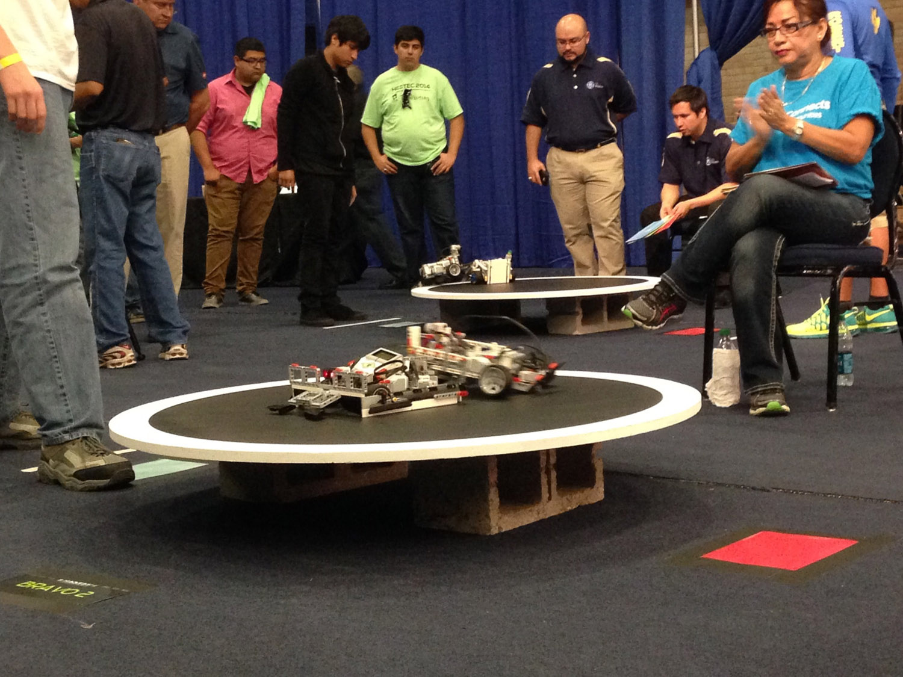
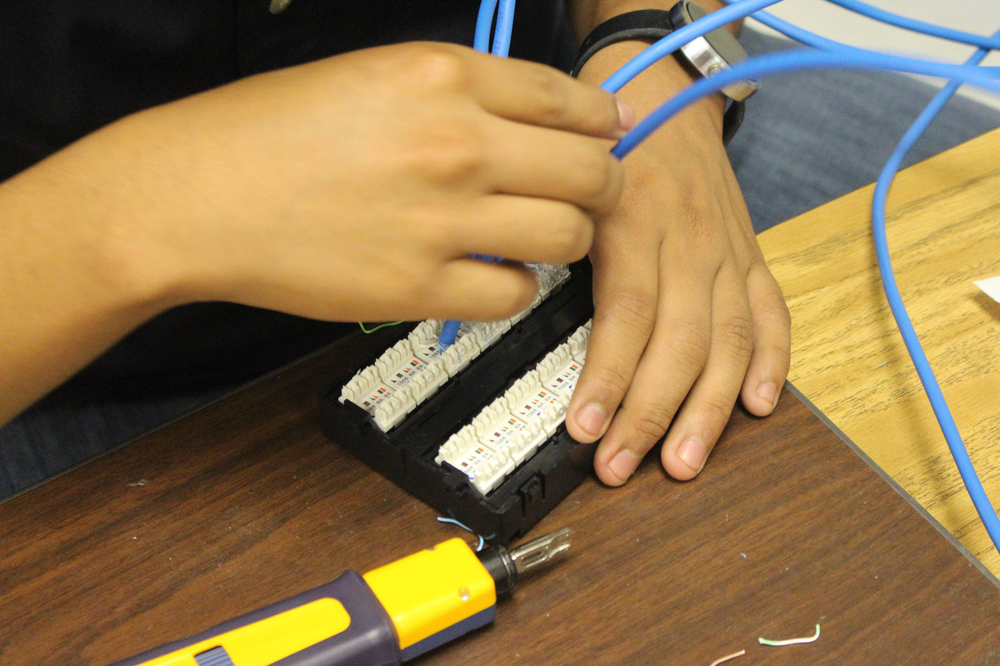

Technology and Engineering Classes
At BETA, students are able to take a variety of technology and engineering classes over their four years here. Their academic schedule is totally customizable, meaning they may be required to fulfill some basic requirements, such as a year of Pre-AP Computer Science, but they get to pick the majority of which of these classes they take.
Engineering Classes
-
Introduction to Engineering Design (IED)
The Introduction to Engineering Design (IED) Class is a required course for freshmen interested in pursuing upper-level engineering education. In this course, students dig deep into the engineering design process, applying math, science, and engineering standards to hands-on projects. Students work individually and in teams to design solutions to a variety of problems. In addition, students are able to earn their AutoDesk Inventor Certifications that prove their knowledge of 2D and 3D modeling softwares.
-
Civil Engineering and Architecture
The Civil Engineering and Architecture (CEA) Class is for sophomores at BETA, as an IED Credit is a pre-requisite. Students in CEA learn important aspects of building and site design and development. Students design both residential and commerical projects in this course. As for certifications, students are able to earn their AutoDesk Revit Certification.
-

STEM in Competition
Representation at the National Level
-

Tech & Engineering
Investments in Robotics
-

Hands-On
Learning Through Application
-
Focus on Technology
Students and Teachers Alike Need STEM
Technology Classes
-
Principles of Information Technology
The Principles of Information Technology (Principles of IT) Class is a required course for freshmen interested in pursuing upper-level technology education. In an environment where students can build relationships that will last for the next four years, essential technology concepts and softwares are introduced, including hardware, software, operating systems, Adobe Photoshop, Microsoft Office, and more. In addition, students are able to earn their IC3 Certification and Microsoft Office Certification(s) that prove their knowledge of computer systems and of Microsoft Office programs.
-
Pre-AP & AP Computer Science
After taking Algebra I as freshmen, technology students are required to take Pre-AP Computer Science their sophomore year, a class in which students focus on strucured programming and analytical problem-solving skills. As juniors and seniors, students are presented with the option to enroll in Advanced Placement Computer Science. Here students, develop advanced programming skills, with emphasis on methodologies, algorithms, and data structures.
-
IB Computer Science
As juniors and seniors, students may enroll in IB Computer Science, a two-year course that fosters students' creativity and innovation by presenting opportunities to design, implement, and present meaningful programs through a variety of media. By using computer science knowledge and skills that support the work of individuals and groups in solving problems, students will select the technology appropriate for the task, synthesize knowledge, create solutions, and evaluate the results.
-
Computer Science III
Only as seniors can students enroll in the most advanced Computer Science course offered at BETA. Students in this class, with Pre-AP Computer Science and AP Computer Science under their belts, will explore more advanced concepts in Computer Science, specifically algorithms and abstract data structures, through self-driven research and project development, under the supervision of the teacher. Students will collaborate with one another, their teacher, and various electronic communities to solve the problem presented throughout the course.
-
IB Film
As juniors and seniors, students may enroll in IB Film, a two-year course that serves as an introduction to the reading and comprehension of film as a language and to cinema as an institution. Film will be looked at as a medium: both what is specific to it (editing, etc.) and what it shares with other media (theater, photography, etc.). Students will have the opportunity to experience firsthand the tools and techniques needed to create their own projects in this medium.
-
Animation
Animation is a course offered to juniors and seniors at BETA. Students, in addition to developing technical knowledge and skills needed for success in the Arts, Audio/Video Technolgy, and Communications career cluster, willl be expected to develop an understanding of the history and techniques of the animation industry. Furthermore, students will have the chance to earn their Adobe ACA-Rick Media Communication Using Flash Certification, which certifies their ablitiy to utilize Adobe Flash effectively.
-
Web Technologies
Web Technologies is a very popular course offered to juniors and seniors at BETA. In this course, students learn to make informed decisions and apy the decisios to the field of information technology, specifically in relation to the Internet and the web. Students essentially learn how to function in a rapidly growing global society in the context of web technologies, including markup languages, networks, and business applications. Students will have the opportunity to become Certified Internet Web Professionals (CIW Certified.
-
Web Design
The Web Design class is offered to seniors who have already taken Web Technologies. Here, students are provided with various internet programming strategies as well as the necessary web administration skills that will allow them to employ their web skills to develop and maintain a variety of web applications. Students will use ressearch skills and electronic communication to create new knowledge in the subject area. In addition, students will take the Adobe ACA-Web Communication Using Dreamweaver Certification Exam.
-
Digital Interactive Media (DIMEDIA)
The Digital Interactive Media (DIMEDIA) class, offered to sophomores who have taken a Principles of IT course, allows students to design and create multimedia projects that address customer needs and resolve problems. Students use softwares such as Adobe Photoshop, Adobe Illustrator, and Adobe InDesign to produce and enhance these multimedia projects. Adobe ACA-Visual Communications using Photoshop, ACA in Graphic Design & Illustration using Adobe Illustrator, and ACA in Print & Digital Media Publication using Adobe InDesign certifications are available to students in this class.
-
Business Information Management (BIM)
This class is available to all students in grades 10 and above. Business Information Managment (BIM) allows students to design and create projects using the Microsoft Office suite of software applications, inluding Microsoft Word, PowerPoint, Excel, and Access. Students will develop essential workplace skills to function in a society that is largely dependent upon these or similar applications. In addition, students will have the opportunity to earn certifications in all programs used, including a Microsoft Office Associate Certification.
-
Computer Maintenance
Computer Maintenance is available to students in their junior or senior years, and is worth a total of 2 credits (taking up two class periods). Students acquire principles of computer maintenance, including electrical and electronic theory, computer hardware principles, and broad level components realted to the installation, diagnosis, service, and repair of computer systems. Students in this class will have the opportunity to earn their Comp TIA A+ Certification to show their awareness and knowledge of computer maintenance.
-
Research in IT Solutions/Practicum
In this course, strictly only available to seniors enrolled in other technology courses, students are able to explore careers in Information Technology through a variety of applications. The critical thinking, information technology experience, and product development may be conducted in a classroom setting with an industry mentor, as an unpaid internship at a local business, or as career preparation. Students previously enrolled in this course have experienced careers in printing, IT management, and other fields.